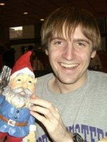
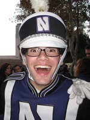

Meet
the Boneheads
"The
trombones are a crazy crew / They're a lot diff'rent from me and you"

Show All | Hide All
 Name:
Sc... Daniel Burgener
Major: ISP, CIS double major
Graduation Year: 2010
Height: 5'6" on a good day
Favorite TV show: Numb3rs
Favorite Food: chocolate chip cookies
Why I joined NUMB: I love marching
Favorite Bonehead Memory: freshman year band camp
Boxers or Briefs: Depends
Secret talents: I can juggle
Favorite Color: Purple
Name:
Andres Caneva
Major: Biology
Graduation Year: 2013
Height: 5'6"
Favorite TV show: Scrubs
Favorite Food: lasagna
Why I joined NUMB: Matt Strumpf said to try it.
Favorite Bonehead Memory: As of right now, all of
band camp week
Boxers or Briefs: Boxers
Secret talents: Fluent in Spanish, etc.
Favorite Color: PURPLE (blue)
Name:
Brian DeConinck
Major: Mathematics
Graduation Year: 2011
Height: In the words of (I think) Will
Rogers, "Tall enough that my
feet touch the ground." (Or, somewhere in the 5'7" to 5'11"
range...honestly, I'm not sure, and I don't think my ID is right...)
Favorite TV show: Corner Gas (Canadian sitcom, but
it's good, honest!)
Favorite Food: Very good bread.
Why I joined NUMB:
I was eager to meet new people before starting classes, and there's no
better way to get to know 150 people than marching band.
Favorite Bonehead Memory: My very first sectional of
band camp, I was told to introduce myself, but it was pretty clear that
this was no longer going to be my actual name. So I introduced myself
with, "My family calls me..." when Jet interrupts and says, "We're your
family now!" It was a little creepy, but gave me a good idea of what the
season would be like.
Boxers or Briefs: Boxers
Secret talents: I... uh... play the trombone? Ooh, I
play the harmonica, too.
Favorite Color: Purple (Go 'Cats)
Name:
Robinson Meyer
Major: Choral Music Education / Voice Performance
Graduation Year: 2013/2014
Height: 6'1"
Favorite TV show: I think I'm bound by my major to
answer "Glee." So that, or the Daily Show.
Favorite Food: It depends. But let's say, a warm
cheeseburger on a potato roll outside, in the park, in the second week
of July.
Why I joined NUMB: I wanted to be known as a
trombonist, not just as a vocalist. AND I saw the Bonehead website, and
they seemed awesome.
Favorite Bonehead Memory: My first Bonehead dinner.
Boxers or Briefs: Depends. (No really it does.)
Secret talents: I spend my summers leaping from rail
car to rail car, hiding out on the grand stallions of steel that
criss-cross this nation and course with its lifeblood. In these fated
but unplanned journeys, I briefly befriend the engineers, conductors,
ne'er-do-wells, hooligans, matronly women, manly men - Americans all! -
that I find on my way; and then I spin yarns and tell tales to the
boyish, sinewy adventurers and the yearning young ladies, who eagerly
raise their eyes and freckle'd cheeks to the sky and stars, desperate
for tales of the Great Beyond. And then I sing anthems of great Hobo
Kings past, of young natives and great beasts, and of the expansive,
husky, sprawling, building-and-rebuilding country that we all inhabit
and posses. Until, come the Harvest Moon of September, I find myself
back in the bareheaded, laughing City of Big Shoulders.... for fall
quarter.
Also, I understand tax law.
Favorite Color: Purple. Is there another color?
Name:
Motoki Mizoguchi
Major: Industrial Engineering
Graduation Year: 2013
Height: 5'6"
Favorite TV show: LOST
Favorite Food: Italian
Why I joined NUMB: I wanted to see if I could get
connections before Concert Band.
Favorite Bonehead Memory: Whirlyball
Boxers or Briefs: Boxers
Secret talents: Be illiterate in the English
language and still make it to NU. I think that's talent.
Favorite Color: Purple
Name:
Alex Moe
Major: Exploratory Studies
Graduation Year: 2012
Height: 5'10", depending on hair
Favorite TV show: SNL
Favorite Food: Nan
Why I joined NUMB: NUMB somewhat lends itself to
non-music majors who want to continue playing. Also, it sounded
reasonably fun.
Favorite Bonehead Memory: Indoctrination at Band
Camp '08
Boxers or Briefs: Boxer briefs; best of both worlds.
Secret talents: I sleep with my shoulder dislocated,
and use my arm as a pillow. (Don't knock it unless you've tried it!)
Favorite Color: Deep slate blue
Name:
David Rosner
Major: Industrial Engineering & Economics
Graduation Year: 2010
Age: 19
Height: 6'4"
Favorite TV show: Scrubs
Favorite Food: Primanti Bros. sandwiches / Quaker
Steak & Lube wings
Why I joined NUMB: My brother had been a 4-year
member.
Favorite Bonehead Memory: Falling madly in love with
Jet.
Boxers or Briefs: Boxers
Secret talents: Ask Jet.
Favorite Color: Why purple of course.
 Name:
Thom Schwartz
Major: Music Education, Jazz Studies
Graduation Year: 2012
Age: 18
Height: 5'7'' according to my driver's licence
Favorite TV show: Flight of the Conchords, SNL
Favorite Food: Rice
Why I joined NUMB: I did marching band in high
school and liked it, I may have to teach marching band some day...
Favorite Bonehead Memory: Growl contest, when
bubbles had to restrain me like an epileptic.
Boxers or Briefs: Boxers
Secret talents: Ever seen me play snare?
Favorite Color: non-Michigan blue
Name:
Phillip Smith
Major: Chemical Engineering
Graduation Year: 2013
Height: 5'8"
Favorite TV show: CSI
Favorite Food: Cheeseburgers
Why I joined NUMB: I love music and I thought it
would be a great way to become familiar with Northwestern.
Favorite Bonehead Memory: Watching the amazing NUMB
tribute video and then marching pre-game at Ryan Field on Senior Day.
It was the proudest moment I have ever had. To make it even better the
team then beat a ranked Wisconsin. Go Cats!
Boxers or Briefs: Boxers (except for when I'm
running)
Secret talents: Procrastinating
Favorite Color: Red
Name:
Alex Straley
Major: Music Education
Graduation Year: 2013
Height: 5'9"
Favorite TV show: The Office
Favorite Food:
Why I joined NUMB: I've always loved marching band
and I just really wanted to be part of a bigger group that was more
serious. Its been such a good choice.
Favorite Bonehead Memory: Whirlyball and Bonehead
march of death
Boxers or Briefs: Boxer Briefs
Secret talents: The ability to be bullied by other
more powerful countries and then allow myself to be split because I'm
already thin so creating a body of water inbetween me isn't a big deal
and then allowing that more powerful country to use me to combine its
Pacific and Atlantic navies, thus creating a military powerhouse in a
time when the navy was still the most powerful aspect of the military,
and because of my own contributions (which were attained due to
bullying and a large stick) that powerful country was hoisted on to the
world stage as a super power ...
Favorite Color: Umm ... Purple?
 Name:
Amy Elizabeth Wolff
Name:
Amy Elizabeth Wolff
Major: Italian and Psychology
Graduation Year: 2010
Height: 5'3"ish (My height changes
every time I go to the doctor. I've been anywhere from 5'2" to 5'4")
Favorite TV show: Old reruns of 90s shows.
Favorite Food: Pasta in almost any form.
Why I joined NUMB: My high school didn't have a
marching band (or a football team for that matter), but I had done
parade marching with the Lions All-State Marching Band. I had a blast
and wanted to see what a real marching band was like. After emailing
Farris the multitude of instruments I played, I got an email from
Webster and Thwimp about the boneheads and knew that NUMB was something
I had to do.
Favorite Bonehead Memory: Passing out head first
into an elevator and having to go to the hospital on move in day my
freshman year and then going to rehearsal later that day to learn
double correct rights with a concussion, stitches in my ear, and a
broken nose :) Why it's a favorite? After I got out of the hospital I
had voicemails/missed calls from almost all of the boneheads because a
rumor had spread that I was carted off in an ambulance. That's bonehead
love at its finest. :)
Boxers or Briefs: On the occasion that I actually
wear men's underwear: Boxers
Secret talents: Knowing useless information and
parallel parking.
Favorite Color: Purple!
Hide This Section
Name:
Alex Gough
Major: Undecided ... Weinberg
Graduation Year: 2012
Height: 6'3"
Favorite TV show: The Penguins of Madagascar
Favorite Food: The cashew
Why I joined NUMB: Marching pwns noobs
Favorite Bonehead Memory: Growling out one door,
waiting for 2 min., and growling back through that same door.
Boxers or Briefs: Boxers (Hanes or Fruit of the Loom
only)
Secret talents: Riding the trombone
Favorite Color: Purple
For the 2009 season, Alex marched as a baritone. But we know he's still a Bonehead at heart.
Hide This Section
Are you an alum but not listed above? Contact us and we'll add you to the list!
Alumni! You'll be added back in soon. I promise! -- Dozer
Hide This Section